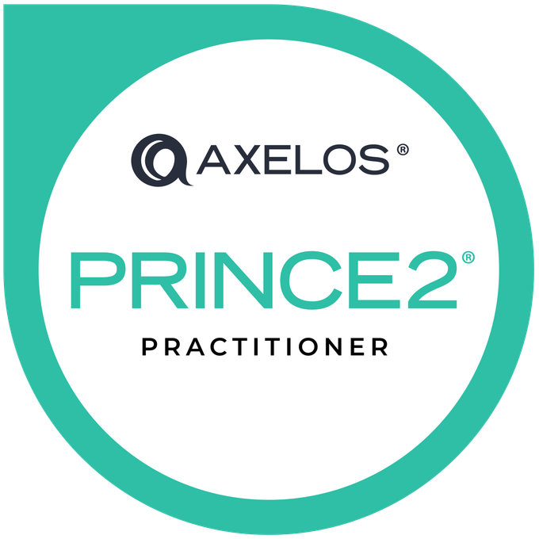
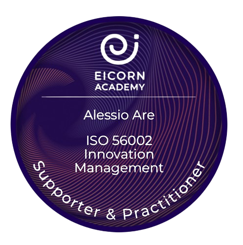
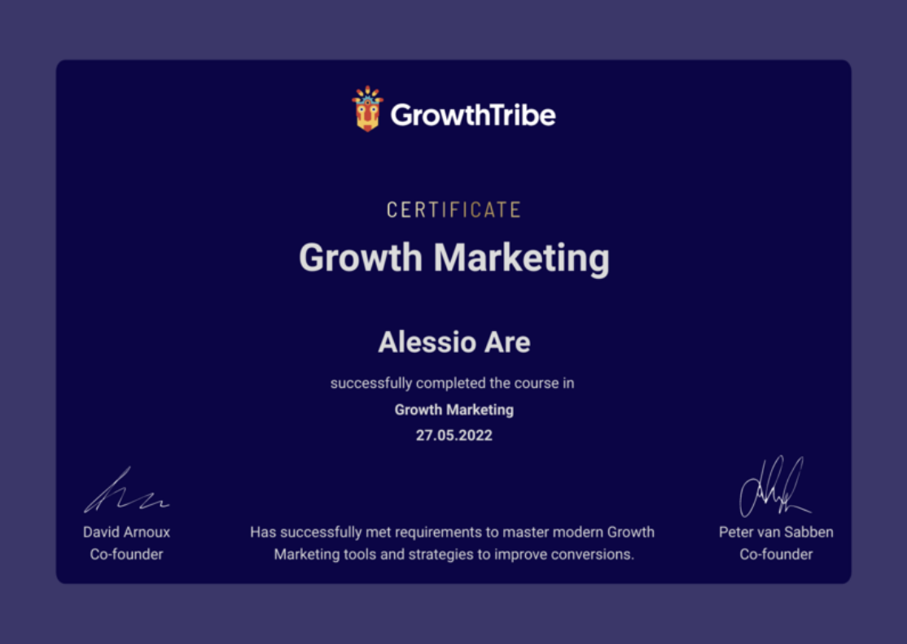
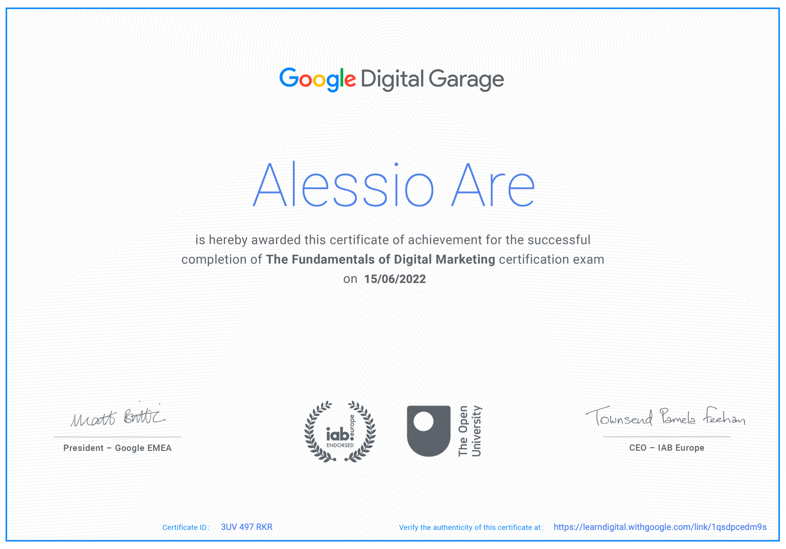
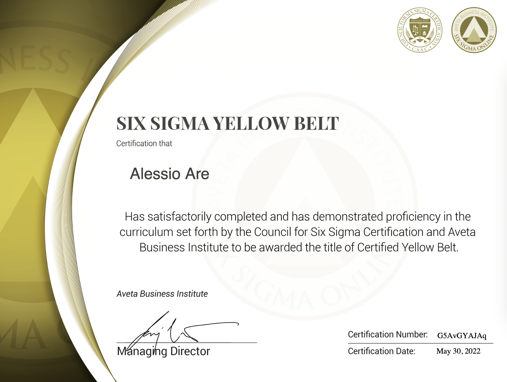
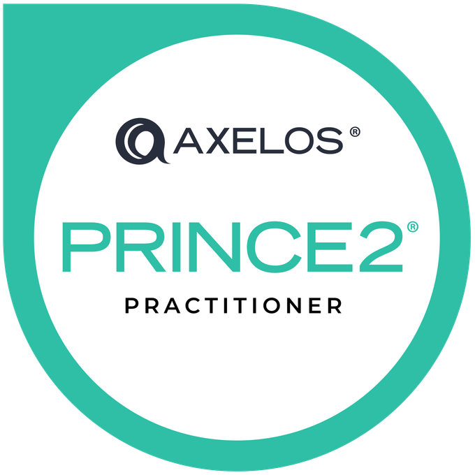
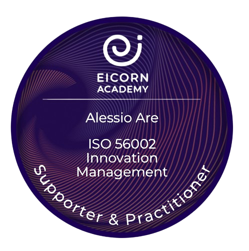
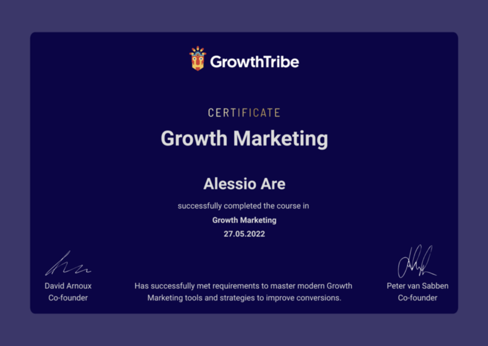
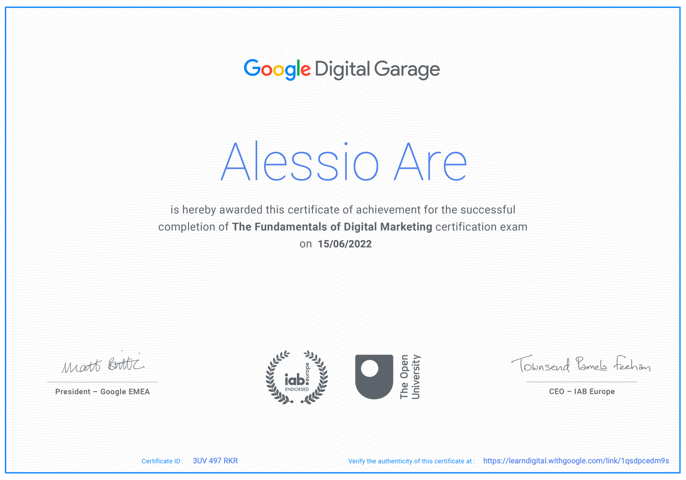
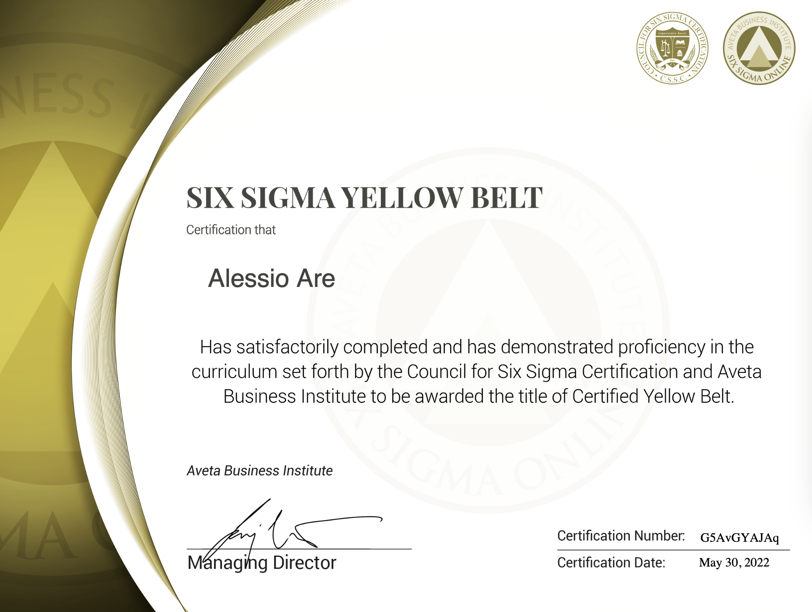

Alessio A. | Project Management Expert


About Alessio
Alessio A. is an experienced Project Management professional with a passion for delivering valuable outcomes by strategically connecting initiatives and people. With extensive experience in the project management domain, Alessio has a proven track record of driving successful outcomes across various industries. Fluent in multiple languages and certified in several project management methodologies, Alessio is dedicated to fostering transformative changes and future potentials in global business landscapes.
Project Management Experience
Tiqets
Alessio has played key roles in API integration across the world, connecting Tiqets to major booking platforms such as Bókun, ExperienceBank, and TourCMS. His experience as a Configuration Specialist at Tiqets involves onboarding, maintaining, and optimizing supply in regions such as Benelux, Southern & Central Europe, and the Nordics & Baltics.
Additionally, Alessio has extensive project management and commercial experience working at Global Internet. During this time, he was responsible for procuring and directing B2B internet access delivery in France & Benelux for customers like Cargill, Nestlé, Mars, Adidas, BASF, Mango, Inditex, Unilever, and Telefónica among others. Alessio's role involved coordinating the API integration in Europe with partners like T-mobile, Tele2, KPN, Ziggo, Orange, Free, SFR, Masmovil, Vodafone, British Telecom, Virgin, TalkTalk, and Colt among others. This experience showcases his ability to manage complex integrations and deliver high-quality solutions for major clients in various regions.
Certifications 🏆
 









📘 PRINCE2® 2017 Practitioner
PRINCE2 (Projects IN Controlled Environments) is a structured project management method and practitioner certification program. It emphasizes dividing projects into manageable and controllable stages. It is globally recognized and widely used in both private and public sectors.
📊 Six Sigma Yellow Belt
The Six Sigma Yellow Belt certification introduces individuals to the concepts of Six Sigma, focusing on developing a deeper understanding of process improvement initiatives and enhancing overall quality. It is essential for those looking to contribute to their organization’s continuous improvement.
📝 Certified Associate in Project Management (CAPM®)
CAPM® is an entry-level certification designed for project practitioners. This certification is recognized globally and demonstrates a professional's ability to manage larger projects and gain additional responsibility.
🌍 Additional Certifications
Specialized knowledge in Soft Skills, Emotional Intelligence, Tourism and Travel Management, Market Research, ISO 56002 Innovation Management, Design Thinking, Growth Marketing, Digital Marketing, and Consumer Insights, highlights Alessio's ability to understand and manage diverse aspects of business, enhancing his versatility and expertise in multiple domains.
Education 🎓
Rome Business School - Master in Project Management
At Rome Business School, the Master's program in Project Management prepares students with essential managerial skills and specialized project management techniques. Here are the key modules:
- Managerial Core: Covers topics like managerial economics, business strategy, accounting, and budgeting, essential for foundational business planning and financial management.
- Project Management Specialization: Includes comprehensive training in project and operations management, business analysis, project planning, execution, monitoring, and control. Emphasis on project management software and agile methodologies like Kanban and SCRUM.
- Leadership and Ethical Practices: Focuses on international and ethical aspects of project management, including corporate social responsibility and professional conduct.
- Interpersonal Skills: Training in leadership, motivation, conflict management, and effective communication to enhance team and individual performance.
- Electives and Capstone Project: Electives in innovation, digitalization, and industry business excellence, culminating in a capstone project where students solve real-world business challenges.

Universidad Internacional de Valencia (VIU) - Master in Project Management
The Master’s program at VIU is tailored to manage projects in a dynamic, globalized business environment:
- Project Lifecycle Management: Detailed study of project initiation, planning, execution, monitoring, and closing phases.
- Advanced Project Management Techniques: Emphasis on risk management, resource allocation, and quality assurance.
- Global Business Environment: Understanding the integration of international standards and practices in project management.
- Professional Development: Preparation for PMI certifications, including PMP and CAPM, critical for advancing in project management.
Università della Valle d'Aosta - Bachelor's Degree in Languages and Communication for Tourism and Business
This program integrates language proficiency with communication skills tailored for the tourism and business sectors. Key courses include:
- Intercultural Communication: Strategies for effective communication across different cultures.
- Tourism Marketing: Techniques for promoting tourism destinations and services.
- Business Negotiation: Skills for negotiating in a competitive business environment.
- Event Management: Planning and managing large-scale events within the tourism industry.
Université Savoie Mont Blanc - Bachelor's Degree in Foreign Languages Applied (LEA) to Tourism, Business, and Communication
This degree emphasizes practical language skills applied in professional settings. Core courses include:
- Applied Language Studies: Advanced studies in language use in professional contexts.
- Corporate Communication: Techniques for effective corporate messaging and branding.
- International Business Strategies: Understanding global business dynamics and market entry strategies.
- Translation and Interpretation: Skills in translating and interpreting across languages in real-time business and tourism contexts.
Languages
References
K.B.
Alessio is a highly positive, enthusiastic and energetic person. In his time at Globalinternet he demonstrated to be a valueable team player who was able getting things done. He showed to be a keen learner and always willing to pick up new things. This how he got involved in a project to implement API’s with our providers. His fluency in various languages, attention to detail and good communication skills contributed largely to the success of the project. It was a pleasure working with Alessio.
G.C.
I had the pleasure to study with Alessio during our master in project management at Rome Business School. Alessio has many competences in project management which he showed in class and what I valued is his willingness to help others. In class, he is well prepared and participates a lot. I had the chance to know Alessio also as a friend and he is very empathic, genuinely interested in listening to others. He is a good friend and fellow student.
R.R.
Alessio's procurement and sales support is excellent. Alessio's problem-solving skills, optimistic attitude, and work ethic impressed me over our two years together. Alessio was crucial to the operations department, always going above and beyond for his clients. He was a trusted team member who was always willing to answer inquiries and address concerns. Alessio was instrumental in the API project, which improved our company's efficiency and performance. Alessio's experience and meticulousness helped the project succeed. Alessio would be a valuable asset to any firm.
N.E.
I worked with Alessio at Globalinternet. Alessio was a pleasure to work with, always showing a positive attitude and enthusiasm. He is reliable and trustworthy, with a strong drive to deliver. Alessio was part of the pricing and delivery team who provided services to my customers, answering commercial proposals for internet solutions. Alessio would liaise with providers to get feasibility and pricing information at pre-sales stage. I appreciated his attention to details, especially when dealing with complex customer requirements. He was also in charge of managing the delivery of internet services ordered by customers. In various occasions, we worked together on difficult deliveries. Having a strong customer focus, Alessio was key to understand the issues and seek solutions with our suppliers to exceed customer expectations. I highly recommend Alessio for any business opportunity. His language skills are a valuable benefit, making him a strong asset for international companies. I wish Alessio all the best!
J.F.G.
Alessio is a great team member, with a positive attitude and is always willing to help and share his experience. He is also very curious and eager to learn and expand his knowledge. He is a very organized person, efficient, and with a lot of skills in project management. He speaks many languages, which makes him someone able to communicate very well in an international environment and very empathetic.
A.T.
I had the pleasure of working with Alessio during my time at Tiqets. What most impressed me about Alessio is his ability to communicate skillfully with key stakeholders during high-pressure situations. He was my point person to handle tough problems! Further, his emotional intelligence, empathy, and positive attitude were key in cultivating an environment of psychological safety and I was always thrilled to work alongside Alessio for this reason.
E.C.
Skills and energy, the combination that best defines Alessio. His professionalism guarantees success in the projects in which he participates. Having him as a colleague has been a privilege.
M.N.
It was a great pleasure to work with Alessio. He was my point of contact at Globalinternet. We need to install telecom services for their clients based in Luxembourg. At times, I was missing information in the order. All I had to do was contact Alessio by email or phone with my problem. The problem was solved quickly and I had all the necessary information quickly. We speak and write to each other in French and English. I really appreciated the good project management and communication with Alessio. The work became easier and more enjoyable. He was very adaptable and could do both sales support and project management. I keep a very good image and experience of him.
A.L.
I loved working with Alessio! Ale is super switched on, a great problem solver with excellent communication and operational/project management skills. I appreciated Ale‘s sense of urgency (and humour!) and his great work ethic (acting like an owner). Ale remains calm under pressure and his wonderful positive energy made working with him a real joy!
E.T.
I had the pleasure to study together with Alessio at Rome Business School and he stood out from the very beginning on. His contribution through asking the right questions to our professors, putting a WhatsApp group together to help our class coordinate better and bring us all close won us all. Stable, well organized, reachable, authentic, supportive and empathetic. What more could possibly one wish for? His positive and happy attitude made an impact and changed the way we all experienced our studies in Project Management. He even helped with organising accommodation and respected private sphere while supporting the team during our bootcamp week in Rome. More than the PMs hard skills that Alessio can easily prove, his soft skills are what every organisation should go after. A rare mix of amazing skills offered from a humble yet professional human being. I hope we will cross roads again Alessio and would be honoured if we ever have the chance to work together!
K.S.
Alessio and I worked together in GlobalInternet where he was assisting me with solving the issues with our vendors. I could always rely on his enthusiastic attitude and communication skills what was very helpful with building great relations with our clients and solve the problems when they arised. He is a great team player but also one who is taking the ownership when needed. Very professional and reliable colleague with a positive mindset. It was a pleasure working together with Alessio.
C.Y.
Alessio is a real experienced professional which I had the luck to cooperate with during my MSc studies in Project Management! In addiction to his excellent core skills he is highly adaptable, encouraging and supportive and with his positive mindset will be a good addition to any role he wants to achieve. Best of luck for the future!
L.F.
Alessio is a precise and reliable colleague. Collaborating with him is a pleasure because he finds original solutions and ideas to overcome the daily challenges that our work presents us every day. Always proactive and willing to go the extra mile to help his team and the colleagues he works with.
T.A.
Alessio and I closely worked together as hosts at BnB Manager. In this role, he demonstrated a customer-oriented and flexible approach. Alessio has been easygoing to work with which is a skill usually underestimated but highly appreciated. He is a great colleague and valuable team member. Alessio determination to make an impact and expand his knowledge, played a key role in the collaboration with Peliqan which is an AI-fuelled and interactive platform in the hospitality experience industry. He provided thoughtful examples, feedback, and suggestions to improve Peliqan’s platform and roll out in the earliest stages. I would recommend anyone to work with Alessio.
D.D.M.
Alessio and I worked in the same team at Tiqets and is a great asset to have in a team. He's proactively looks for more responsibilities and way to have a bigger impact in his role. I worked closely with him in different occasions, especially on one project in which he proved he's able to take the lead and has a data-driven mindset. Although he was very busy with many different daily tasks, he was always available to help other team members if needed. He never shied away from trying to make the communication among departments better and has always been eager to learn and do more. I have a great memory of all the times we had worked together.
D.K.
I highly recommend Alessio for any business opportunity. He is a reliable and trustworthy individual who is enjoyable to work with and a driven and effective problem-solver. You can count on him to get things done and deliver results.
E.P.
Alessio and I have been University classmates from 2016 to 2019 at Università della Valle d'Aosta. Not only we have been classmates, but also teamwork colleagues. During university projects, he has shown reactivity and collaboration with the team in defining the strategy and settling the actions to fulfill the foreseen objectives in the most efficient way. We got along from the very first moment thanks to our common passions for languages and cultures, as well as our working and team management style. During these years we kept in contact and we've been exchanging our experiences and opinions on work related matters. I have to admit that I admire the person he has become and his achievements so far, both on a professional and personal level. From my university experience with him, I know he is proactive and diligent in his job and open to confront others. What I appreciate the most about him, is his capability to apply the knowledge, his experience and his passion for tourism & languages developed during the last 10 years in every new situation he faces. He's following his compass and he knows where he's going. Hopefully one day we'll be able to be work colleagues. I wish you the best of luck Ale!
E.H.
I had the pleasure of working with Alessio on the Capstone Project as a part of the master's program at Rome Business School. During the project, I found Alessio to be an extremely dedicated and hardworking team member who consistently demonstrated a high level of initiative and attention to detail. Alessio's strong problem-solving skills were evident throughout the project. He was always willing to go above and beyond to ensure success. He was also an excellent communicator and team player. He was always willing to collaborate and share ideas with the rest of the team. Overall, I highly recommend Alessio for any project management role. His skills, experience, and work ethic make him a valuable asset to any organization.
L.P.
It was a real pleasure to work with Alessio on our Capstone Project for Rome Business School. He was very dedicated in the project and knew how to balance his time between his work and studies. He often came up with ideas on how to deal with problems we encountered during the project, for example, he would make a list of priorities to focus on in order to tackle every problems once at a time and find a solution. Therefore, he has great project management skills. Any team will be lucky to have him!
M.L.
Alessio has been a great colleague to me during my time at Tiqets. He wears many hats in his role, and has helped the Connections team greatly in connecting products and communicating with suppliers. He is always so eager to learn new things and think of ways for improvement. I am confident that he will be an important asset to any team he joins!
K.G.
I had the pleasure to work with Alessio for our joint project in PM. He was an absolute ease to work with, innovative and insightful. He showed determination and was great fun to work with.
A.C.
I've had the luck to work on a strategic business plan with Alessio. The situation with the team was quite chaotic, but he did manage to be a good mediator. A creative mind, a pool of ideas and an extremely friendly/empathetic team mate. I hope to get the chance to work with him again any time soon.
P.D.
It has been smoothly and pleasurable working with Alessio, he understood the impact of his work on our department and tried his best to deliver value to the customers, keeping in mind how to benefit the company behind his role and team. Alessio is an enthusiastic and capable individual, with a great attitude and a proactive approach towards his daily challenges. He is always willing to support and, at the same time, he never misses an opportunity to learn. Was a loss for the company to seeing him leaving to pursue his career in the touristic field.
D.O.
While working at bnbmanger I enjoyed the collaboration style Alessio and I had. We worked in a fast pace environment in which you need to be able to adjust quickly and be flexible. Alessio managed to deliver a high level of customer service while staying resistant (and even enjoying) to this stress level. Next to that, I have always appreciated his way of problem-solving to uphold the experience we wanted to deliver. This really showed how fast he can learn and adapt to new industries and environments. Alessio is more than a 'good employee' he is highly motivated by impacting our planet and people in a positive way. This upped our company culture and motivated me and others.
J.K.
I met Alessio during a project work in Rome. What struck me the most was his motivation and his ability to understand the mood of the other colleagues. A true example of using emotional intelligence!
V.V.L.
It was a great pleasure working with Alessio in Globalinternet. He has managed the API project for different regions including Europe, Canada and USA. He has a great communication and leadership skills which were one of the reason behind a success of API project. Alessio was very clear with his opinions and suggestions for the improvements of API project and he was always ready to help development team with any clarity about business expectations and execution of API. I found his problem solving skills, ownership attitude and desire to learn and pushing himself to his best are always fascinating. I wish Alessio all the very best for the future assignments and I am very much sure that he will be an asset to any organization.
J.A.
Alessio is a young and quite talented individual with a superb ability to adapt and overcome the problems we faced during the API implementation.